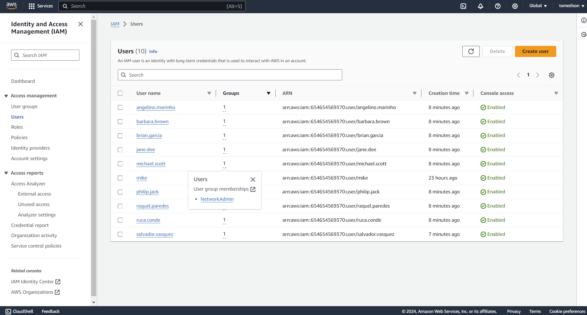

Automated user creation and management of AWS Identity and Access Management (IAM) resources. AWS | AWS IAM | Shell Script | AWS CLI | GitBash
Problem Statement
In this project based on a real-world scenario, I acted as Cloud Specialist with the mission to migrate users in an automated way and manage AWS IAM (Identity and Access Management) resources. There were 100 users that needed to be migrated and have MFA (Multi-factor authentication) enabled on their accounts, as this is a security best practice. My Mission: To avoid repetitive and manual tasks in the AWS console, I needed to think about automating the processes.
Introduction
AWS Identity and Access Management (IAM) is a web service that helps you securely control access to AWS resources. You use IAM to control who is authenticated (signed in) and authorized (has permissions) to use resources. Overall, AWS Identity and Access Management (IAM) is a foundational service that enables you to manage access to AWS services and resources securely. With IAM, you can create and manage users, groups, and roles, control permissions to allow or deny access to resources, and integrate with other AWS services for enhanced security and governance.

Solution Architecture
Shell script used to extract IAM user details from csv file and add user to corresponding predefined user groups in IAM. Then enforced MFA policy for all users using custom policy attaching to all the user groups. Also, attached corresponding policies according to the user groups and additional change password policy for initial signup.
Step by step
Create and setup resources
 Get the user details from company HR.
Get the user details from company HR.
 Modify the user data to create csv file with only necessary details like username, group name and password.
Then upload file to AWS Cloudshell.
Also, create all the corresponding user grouos and attach necessary policies to it.
Modify the user data to create csv file with only necessary details like username, group name and password.
Then upload file to AWS Cloudshell.
Also, create all the corresponding user grouos and attach necessary policies to it.
 Create shell script to read user details in file one by one and assign corresponding user details(username, group name and password) to create user, set login proffile password and add user to group.
After uploading this file to AWS cloudshell modify file type to executable mode.
Create shell script to read user details in file one by one and assign corresponding user details(username, group name and password) to create user, set login proffile password and add user to group.
After uploading this file to AWS cloudshell modify file type to executable mode.
Output
 Run the bash file to create users.
Run the bash file to create users.
 Now we can see the user getting created in AWS management console.
 Attach custom MFA policy to all user groups to enforce all users to create MFA first to access other services in AWS.
Attach custom MFA policy to all user groups to enforce all users to create MFA first to access other services in AWS.
 This is after setting up virtual MFA using google authenticator and login again to get access to all resources and services.
This is after setting up virtual MFA using google authenticator and login again to get access to all resources and services.
References
- AWS IAM Documentation: https://docs.aws.amazon.com/IAM/latest/UserGuide/introduction.html?icmpid=docs_iam_console
- AWS MFA policy Documentation: https://docs.aws.amazon.com/IAM/latest/UserGuide/reference_policies_examples_iam_mfa-selfmanage.html